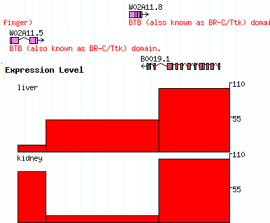

| File Formats | BED File Format | Feature File Format | Customizing Appearance | Displaying Intensity Plots & Other Numeric Data | Importing Custom Tracks via the Internet |
|---|
This genome browser allows you to upload custom track data in a variety of quantitative and non-quantitative formats. You can also import data sets that reside on network-connected servers by referring to their URLs.
Accepted formats include:
Please see the links above for descriptions of how to create and format these data files.
In addition, GBrowse supports an internal genome annotation file format that is unimaginatively called "Feature File Format" (FFF). It is a relatively simple format that allows you to create features, name them, group them together, and tweak their display in various ways.
Both the FFF and GFF3 formats allow you to customize the display using GBrowse's track configuration sections, which are described later in this document. When uploading WIG or BED files, GBrowse will convert the UCSC track definition line into an equivalent GBrowse configuration section.
The simplest format to use is BED. Each line of the file is a feature; each feature has three required fields, and 9 optional fields, separated by white space:
For example, this file will define a single 100 bp feature on chromosome chr1 spanning the bases 0 to 99:
chr1 0 100
Additional fields let you add a name, a score, a color and other types of decoration to the feature. The most commonly used optional field is the name field, which allows you to add a name to your feature:
chr1 0 100 myFavoriteGene
Please see the UCSC genome browser documentation for the full description of everything you can do with BED.
In addition to the BED file format for qualitative tracks, GBrowse supports "Feature File format", which is slightly more configurable than BED. In addition, it uses 1-based chromosome coordinates, which are somewhat more intuitive.
Here is an example:
[mRNA] glyph = gene key = My Genes mRNA hox1 Chr1:1..100 Type=UTR mRNA hox1 Chr1:101..200,300..400,500..800 Type=CDS mRNA hox1 Chr1:801..1000 Type=UTR [EST] glyph = segments bgcolor = green key = Mapped Expressed Tags EST yk260e10.5 Chr3:15569..15724 EST yk672a12.5 Chr3:537..618,3187..3294 EST yk595e6.5 Chr3:552..618 [PRED] glyph = heat_map start_color = yellow end_color = blue min_score = 0 max_score = 100 citation = Bluer exons have higher prediction values key = Predicted genes PRED "Gene 1" Chr1:518..616 score=50 PRED "Gene 1" Chr1:661..735 score=80 PRED "Gene 1" Chr1:3187..3365 score=50 PRED "Gene 2" Chr1:16626..17396 score=85 PRED "Gene 2" Chr1:17451..17597 score=90
Each annotation occupies one or more lines. It contains three to five columns, delimited by tabs or spaces:
chr3:1..10,49..80,110..200
To describe an oriented feature that is on the minus strand, such as a transcribed gene, simply reverse the order of the start and stop ranges. For example:
chr1:200..110,80..49,10..1
All ranges uses the coordinate system of the most recently declared reference landmark.
See Customizing the display for details.
If most of your features are on the same chromosome, then you can insert a reference=<seqid> line to indicate the default sequence ID:
reference=Chr1 PRED "Gene 1" 518..616 score=50 PRED "Gene 1" 661..735 score=80 PRED "Gene 1" 3187..3365 score=50 PRED "Gene 2" 16626..17396 score=85 PRED "Gene 2" 17451..17597 score=90
Chr1 will now be the default chromosome until the next reference= line is encountered.
In addition to this format, you may use the standard GFF format for your data. Details can be found at the Sanger Centre.
To create a feature that has multiple subparts, you can indicate the type of each subpart using the Type="some type" tag. Usually you will use this for coding gene transcripts when you want to distinguish the coding and non-coding portions of the gene.
Here is a simple example:
mRNA B0511.1 Chr1:1..100 Type=UTR;Note="Putative primase" mRNA B0511.1 Chr1:101..200,300..400,500..800 Type=CDS mRNA B0511.1 Chr1:801..1000 Type=UTRThe top level feature's primary tag will be "mRNA", as indicated in the first column. It will contain five subparts, a 5' UTR spanning positions 1..100, a series of three CDS (coding) regions, and a 3' UTR extending from positions 801..1000.Additional tags that are placed in the first line of the feature, such as the Note, will be applied to the top level. In this example, the note "Putative primase" will be applied to the mRNA at the top level of the feature:
Grouping
You can group related features together. The layout will attempt to keep grouped features together, and will connect them with a dotted or solid line if the connector option is specified.
A group is created using a line that contains just two columns consisting of the feature type and name. This is followed by a series of data lines in which the feature type is blank. For example:
cDNA-clone yk53c10 yk53c10.5 18892-19154 yk53c10.3 15000-15500,15700-15800 [cDNA-clone] glyph = segments connector = dashedThis example creates a group of type "cDNA-clone" named Yk53c10. It consists of two sub-features, one the 5' EST and the other the 3' EST. The two configuration section that follows this group says to use the "segments" glyph and to connect the parts using a dashed line. This is described in more detail later.
You can add URLs and descriptions to the components of a group, but not to the group as a whole.
Comments
You can place a comment in the annotation file by preceding it with a pound sign (#). Everything following the pound sign is ignored:
# this is a comment
Customizing the Display
The browser will generate a reasonable display of your annotations by default. However, when using either FFF or GFF3 formats, you can customize the appearance extensively by including one or more configuration sections in the annotation file. In addition to changing the size, color and shape of the graphical elements, you can attach URLs to them so that the user will be taken to a web page of your choice when he clicks on the feature.
Here is an example configuration section. It can appear at the top of xthe file, at the bottom, or interspersed among data sections:
# example file [general] height = 12 strand_arrow = 1 [EST] glyph = segments bgcolor= yellow connector = dashed height = 5 [FGENES] glyph = gene bgcolor = green description = 1The configuration section is divided into a set of sections, each one labeled with a [section title]. The [general] section specifies global options for the entire image. Other sections apply to particular feature types. In the example, the configuration in the [EST] section applies to features labeled as having type "EST", while the configuration in the [FGENES] section applies to features labeled as predictions from the FGENES gene prediction program. Options in more specific sections override those in the general section.
Inside each section is a series of name=value pairs, where the name is the name of an option to set. You can put whitespace around the = sign to make it more readable, or even use a colon (:) instead if you prefer. The following option names are recognized:
Option Value Example bgcolor Background color of each element blue bump Prevent features from colliding (0=no, 1=yes) 1 connector Type of group connector (dashed, hat or solid) dashed description Whether to print the feature's description (0=no, 1=yes) 0 fgcolor Foreground color of each element yellow glyph Style of each graphical element (see list below) transcript height Height of each graphical element (pixels) 10 key Key to the feature. This is a human-readable description that will be printed in the key section of the display ESTs aligned via TwinScan 1.2 label Print the feature's name (0=no, 1=yes) 1 linewidth Width of lines (pixels) 3 link URL to link to. This is a Web link in which certain variables beginning with the "$" will be replaced with feature attributes. Recognized variables are: $name - the name of the feature, and $type - the type of the feature (e.g. EST). link = http://www.your.site/db/get?id=$name;type=$type citation This is a longer narrative description of the feature intended to identify the author and detailed description of the method. It can be either a text description or a link. http://your.site.org/detailed_description.html strand_arrow Indicate feature strandedness using an arrow (0=no, 1=yes). NB: Strandedness is depicted differently by different glyphs, and in some cases is the default. 1 section Indicates where in the gbrowse window this type of feature should be placed: "details"=details panel; "overview"=overview panel; "region"=region panel (if there is one for this source); "details+overview"=both panels; "details+overview+region"=all three panels. "details" is the default.
details+overview The bump option is the most important option for controlling the look of the image. If set to false (the number 0), then the features are allowed to overlap. If set to true (the number 1), then the features will move vertically to avoid colliding. If not specified, bump is turned on if the number of any given type of sequence feature is greater than 50.
Unlike the data section, you do not need to put quotes around option values that contain white space. In fact, you can continue long option values across multiple lines by putting extra space in front of the continuation lines:
[GenomeAlign] citation = The pseudoobscura genome was aligned to melanogaster using GenomeAlign version 1.0. High-similarity regions are shown in blue, low similarity regions are shown in orange. The work was performed by Joe Postdoc, and is currently in press.Some glyphs also have glyph-specific options. These are described in detail below.
Colors
Colors are English-language color names or Web-style #RRGGBB colors (see any book on HTML for an explanation). The following colors are recognized:
white coral darkslateblue green lightpink mediumslateblue paleturquoise sienna black cornflowerblue darkslategray greenyellow lightsalmon mediumspringgreen palevioletred silver aliceblue cornsilk darkturquoise honeydew lightseagreen mediumturquoise papayawhip skyblue antiquewhite crimson darkviolet hotpink lightskyblue mediumvioletred peachpuff slateblue aqua cyan deeppink indianred lightslategray midnightblue peru slategray aquamarine darkblue deepskyblue indigo lightsteelblue mintcream pink snow azure darkcyan dimgray ivory lightyellow mistyrose plum springgreen beige darkgoldenrod dodgerblue khaki lime moccasin powderblue steelblue bisque darkgray firebrick lavender limegreen navajowhite purple tan blanchedalmond darkgreen floralwhite lavenderblush linen navy red teal blue darkkhaki forestgreen lawngreen magenta oldlace rosybrown thistle blueviolet darkmagenta fuchsia lemonchiffon maroon olive royalblue tomato brown darkolivegreen gainsboro lightblue mediumaquamarine olivedrab saddlebrown turquoise burlywood darkorange ghostwhite lightcoral mediumblue orange salmon violet cadetblue darkorchid gold lightcyan mediumorchid orangered sandybrown wheat chartreuse darkred goldenrod lightgoldenrodyellow mediumpurple orchid seagreen whitesmoke chocolate darksalmon gray lightgreen mediumseagreen palegoldenrod seashell yellow coral darkseagreen green lightgrey mediumslateblue palegreen sienna yellowgreen Glyphs
The ``glyph'' option controls how the features are rendered. The following glyphs are implemented:
Name Description generic A filled rectangle. ellipse An oval arrow An arrow; can be unidirectional or bidirectional. It is also capable of displaying a scale with major and minor tickmarks, and can be oriented horizontally or vertically. segments A set of filled rectangles connected by solid lines. Used for interrupted features, such as gapped alignments and exon groups. gene The "gene" glyph is suitable for drawing coding genes. The coding regions will be drawn using the specified bgcolor, and the UTRs will be drawn in grey. You can change the color of the UTRs by specifying a "utr_color" option. For the gene glyph to work properly, the top level feature must be of type "mRNA" and the subparts of type "UTR", "five_prime_UTR", "three_prime_UTR", or "CDS". See the top of this document for an example. transcript Similar to segments, but the connecting line is a "hat" shape, and the direction of transcription is indicated by a small arrow. transcript2 Similar to transcript, but the direction of transcription is indicated by a terminal segment in the shape of an arrow. anchored_arrow Similar to arrow, but the arrow is drawn in order to take account of features whose end-point(s) are unknown, rather than to indicate strandedness. primers Two inward pointing arrows connected by a line. Used for STSs. triangle A triangle, used to represent point features like SNPs, or deletions and insertions. May be oriented north, south, east or west. xyplot A histogram, line plot or column chart, used for graphic numeric features such as microarray intensity values. To indicate the value you wish to chart, add a score=XXXX note to the description section: See Displaying Intensity Plots & Other Numeric Data for full details.Intensity expt1 15569..15724 score=192 Intensity expt1 17451..17597 score=1071wiggle_xyplot Similar to the xyplot glyph, but specialized for displaying very dense quantitative data. When you upload a WIG file, this glyph is automatically chosen for you. graded_segments A set of connected segments whose colors change intensity according to a score indicated by a "score=XXX" tag. The low and high scores are indicated by "min_score" and "max_score" options in the configuration stanza, and the basic color is indicated by "bgcolor." wiggle_density Similar to the graded_segments glyph, but specialized for displaying very dense quantitative data. When you upload a WIG file, this glyph is automatically chosen for you as an alternative to wiggle_xyplot. heat_map A set of connected segments whose colors change hue according to a score indicated by a "score=XXX" tag. The low and high scores are indicated by "min_score" and "max_score" options in the configuration stanza, and the start and ending hues are indicated by "start_color" and "end_color." A feature with score equal to min_score will be displayed using start_color, while a feature with score equal to max_score will be displayed using end_color. Intermediate scores are displayed by blending the two hues. trace Reads a SCF sequence file and displays the trace graph. For this glyph to work, the trace file must be placed on a web-accessible FTP or HTTP server and the location indicated by a "trace" tag: Read ef18222 15569..15724 trace=http://my.host/traces/ef1822.scfThe following glyph-specific options are recognized:
Glyph Option Description arrow, anchored_arrow tick Draw major and minor ticks on arrow. (0 = no ticks, 1 = major ticks, 2 = major & minor ticks) parallel Whether to draw the arrow parallel to the sequence or perpendicular to it (1=parallel, 0=antiparallel). northeast, east Force a north or east arrowhead. (The two option names are synonyms.) (0=false, 1=true) southwest, west Force a south or west arrowhead. (The two option names are synonyms.) (0=false, 1=true) double force doubleheaded arrow (0=false, 1=true) base Draw a vertical base at the non-arrowhead side (0=false, 1=true). scale Reset the labels on the arrow to reflect an externally established scale. gene utr_color Color of the UTRs thin_utr If set to a non-zero value, then UTRs will be drawn as thin boxes decorate_introns If set to a non-zero value, then introns will be decorated with little arrows indicating the direction of the transcript primers connect Whether to connect the inward-pointing arrowheads by a line (0=false, 1=true) connect_color Color of the connecting line triangle point Is this a point-like feature? If true, the triantle will be drawn at the center of the range, and not scaled to the feature width. (0=false, 1=true) orient Orientation of the triangle. (N=north, S=south, E=east, W=west) xyplot, wiggle_xyplot graph_type Type of graph (histogram, boxes, line, points, linepoints) min_score Minimum score for feature (will be level 0 on graph) max_score Maximum score for feature (will be level 0 on graph) scale Where to draw the Y axis scale, if any (left, right, both, none) point_symbol When using points or linepoints graph types, controls the symbol to use for the data points. One of triangle, square, disc, point, or none. point_radius The radius of the symbols, if applicable, in pixels bicolor_pivot This is a numeric option, which, if specified, causes the histogram to be drawn in two colors, one for values above the limit specified by the "pos_color" option and one for values below the limit specified by the "neg_color" option. pos_color The color to draw values which are above bicolor_pivot, if bicolor_pivot is specified. neg_color The color to draw values which are below bicolor_pivot, if bicolor_pivot is specified. graded_segments, wiggle_density min_score Minimum score for the feature (will be drawn as a white segment) max_score Maximum score for the feature (will be drawn as a segment with full intensity bgcolor) heat_map min_score Minimum score for the feature (the segment will be drawn with the starting hue) max_score Maximum score for the feature (the segment will be drawn with the ending hue) start_color Color for segments with the minimum score end_color Color for segments with the maximum score bicolor_pivot This is a numeric option, which, if specified, causes the histogram to be drawn in two colors, one for values above the limit specified by the "pos_color" option and one for values below the limit specified by the "neg_color" option. pos_color The color to draw values which are above bicolor_pivot, if bicolor_pivot is specified. neg_color The color to draw values which are below bicolor_pivot, if bicolor_pivot is specified. trace trace Specify the trace path or URL to use for this feature. trace_prefix String to prepend to each trace path. You may prepend a directory or a partial URL. trace_height The height in pixels that the trace will be drawn. vertical_spacing Vertical distance from the box that shows the physical span of the feature to the top of the picture (in pixels). glyph_delegate Glyph to use when zoomed out too far for the trace to be drawn. a_color Color of the line representing Adenine on the trace. c_color Color of the line representing Cytosine on the trace. g_color Color of the line representing Guanine on the trace. t_color Color of the line representing Thymine on the trace. show_border Show the black border from around the trace (0=false, 1=true)
Displaying Intensity Plots & Other Numeric Data
For large data sets such as chromosome-wide tiling arrays, please use Wiggle (WIG) format. However, for smaller data sets (1-10,000 points), you can use FFF format to achieve a quick and dirty display.
Here is a simple template for you to follow. The result is shown on the right. 
The [expression] section says to use the xyplot type of glyph, to set its type to "boxes" (a column chart), to make the fore and background colors black and red respectively, to set the height of the chart to 100, and to set the minimum and maximum values for the Y axis to 0 and 110 respectively. We also add a label and a human-readable track key.
The data section defines two experiments to show in the track. Both experiments use probes whose positions are relative to landmark B0019 (you can of course use chromosome coordinates, or whatever you choose). Both experiments are of type "expression", but one is the "liver" experiment and the other is the "kidney" experiment, as indicated in the second column. The third column contains the coordinates of each assay point, and the fourth column contains the score=XXX attribute, where XXX is the intensity value.
See the chart in the previous section for the xyplot glyph options.
Importing Custom Tracks via the Internet
GBrowse can display annotation files that are physically located on internet-connected sites. Use the "Import a track" section to paste in the URL of an annotation file. The following URL types are allowed:
- The URL of a BED, GFF3, or FFF file.
- If a BED, GFF3 or FFF file is located on an internet-accessible FTP or web server, paste its URL into the "remote URL" text field. It will be mirrored to the GBrowse server and displayed. When you update the file, the updated version will be mirrored automatically.
- The URL of a BigWig (.bw) file
- This is a format that allows you to import UCSC Wiggle tracks into the browser in a fast and efficient manner. If you haven't already done so, obtain the BigWig tools from the UCSC Genome Browser and run the wigToBigWig utility as described there. Name the file with a ".bw" extension (important!) and place it on an FTP or Web server that can be accessed via this browser. Finally paste the full URL of the BigWig file into the "Import a track URL" field and press "upload". Note: To create the BigWig file you will need a "chrom.sizes" file corresponding to the chromosome lengths of the genome. To obtain a suitable file from the browser, select Download Chrom Sizes from the "File" menu in the upper left corner of the genome browser page.
- The URL of a sorted, indexed BAM file
- Sort a BAM sequence alignment file and index it with SamTools. Place the BAM file and its associated .bai index file on a web or FTP-accessible server and paste its URL into the "Import a track URL" field. The information in the file will be retrieved as needed in a network-efficient manner. It is up to you to ensure that the chromosome coordinates of the BAM file match the build of the genome used by this instance of the browser, or nothing will show up (you'll get blank tracks). Please be aware that the URL must end with ".bam" for GBrowse to recognize that it is a BAM file.
- A GBrowse or DAS URL
- You can share tracks from one GBrowse server to another by clicking on the icon. This will give you a URL that you can paste into the URL import field. Alternatively, you can view a large variety of annotations using the distributed annotation system (DAS) protocol. The DAS registry will help you locate DAS servers with useful genomic data. Then cut and paste the DAS server URL into the remote track URL box as before.
$Id$